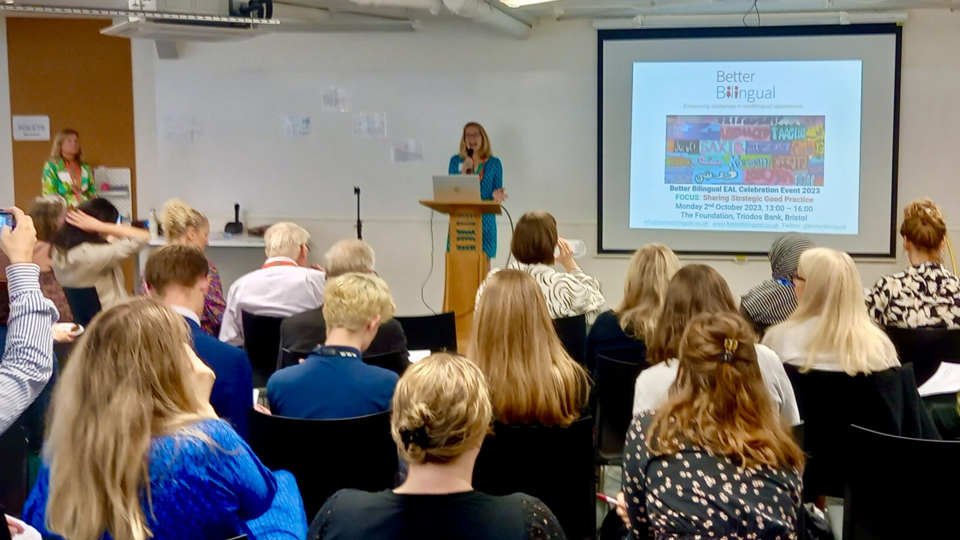

Belong. Learn. Thrive.
CPD
New to English
This two-session online CPD introduces schools to the Better Bilingual ‘New to English’ Induction Programme, a structured 6–8 week intervention designed to help newly arrived pupils rapidly develop survival English and feel included. Suitable for primary and secondary settings, the training equips Teaching Assistants, EAL leads and school leaders with practical strategies to support early oracy, promote multilingual identity and enable quick access to classroom learning. The programme covers key themes such as personal language, routines and subject-specific vocabulary, including Maths. Participants gain expert guidance, teaching resources and opportunities to share practice. The course costs £175 and includes a digital copy of the programme, supporting high-quality, inclusive provision for international new arrivals.
Open PDF
Multilingualism (EAL) Champions
The Multilingualism Champions programme is an online CPD course designed to build whole-school capacity for multilingual education and Equity, Diversity, Inclusion and Belonging (EDIB). Aimed at middle and senior leaders, it supports those responsible for EAL strategy, assessment and inclusion across primary and secondary schools. The flexible format includes six recorded training sessions, optional live webinars and a portfolio leading to certification. Topics include supporting new arrivals, meeting the needs of advanced bilingual learners, working with refugee pupils, embedding EAL assessment, developing policy and reviewing curriculum through an EDIB lens. Participants gain research-informed guidance, practical tools and strategic direction to drive sustainable change and improve outcomes for multilingual learners across their school or trust.
Open PDF
Adaptive Teaching
This in-person CPD session focuses on adaptive teaching approaches to improve attainment for bi- and multilingual learners, particularly those working at English proficiency Bands C and D. Designed for middle and senior leaders, subject leaders and classroom teachers, the training explores key research messages and the principles of effective multilingual pedagogy across KS2–KS3. Participants develop a clear understanding of learner needs and explore practical, engaging strategies to support academic progress across the curriculum. Delivered interactively at Burges Salmon in Bristol, the session provides actionable classroom approaches, resources and opportunities for professional discussion. Priced at £75, the course helps schools identify next steps to ensure multilingual pupils thrive and achieve their full academic potential.
Open PDF

Summer Network Meeting
This twilight network event launches the Multilingual Motivators initiative, a volunteer programme designed to celebrate pupils’ first languages and strengthen their sense of belonging. Aimed at school leaders and potential volunteers, the session introduces translanguaging approaches and practical ways bilingual adults can support schools. Examples include bilingual reading, sharing language journeys, assisting with vocabulary resources and contributing to multilingual displays. The initiative, sponsored by Burges Salmon, aims to increase pride in multilingualism while accelerating English language development. Held in Bristol, the interactive meeting encourages collaboration and partnership between schools and community volunteers. At £45 per person (free for volunteers), the event offers practical ideas, networking opportunities and guidance to enhance multilingual provision.
Open PDF